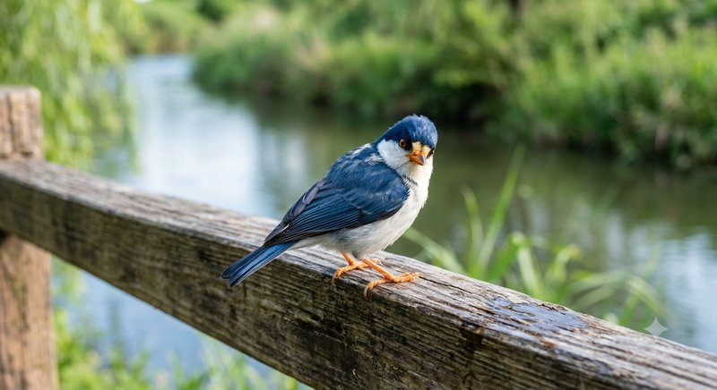

ピコぬどりは、市内の線路沿いやぬかピコ川沿いなど、境界にあたる場所でよく 見られる小柄な鳥です。昭和の終わり頃、市の鳥に指定されました。
生態
人懐こく、近くで作業をしていても逃げずにじっとしていることがあります。 一方で、近づきすぎるとすっと距離をとる性質があり、一定の間合いを 保つ鳥として知られています。群れをつくらず、単独で行動することが 多いようです。
鳴き声
鳴き声についての正式な記録は、現在のところありません。目撃した市民の方から 「静かだった」という報告が多く、鳴くところを見たという情報は少数にとどまって います。
目撃情報
記録町周辺やぬかピコ川沿いの遊歩道での目撃報告が多く寄せられています。 観光案内の半日さんぽコースを歩かれる際は、 あわせて注意してご覧になってみてください。
目撃された際の写真や記録は、記録政策課にて随時受け付けています。